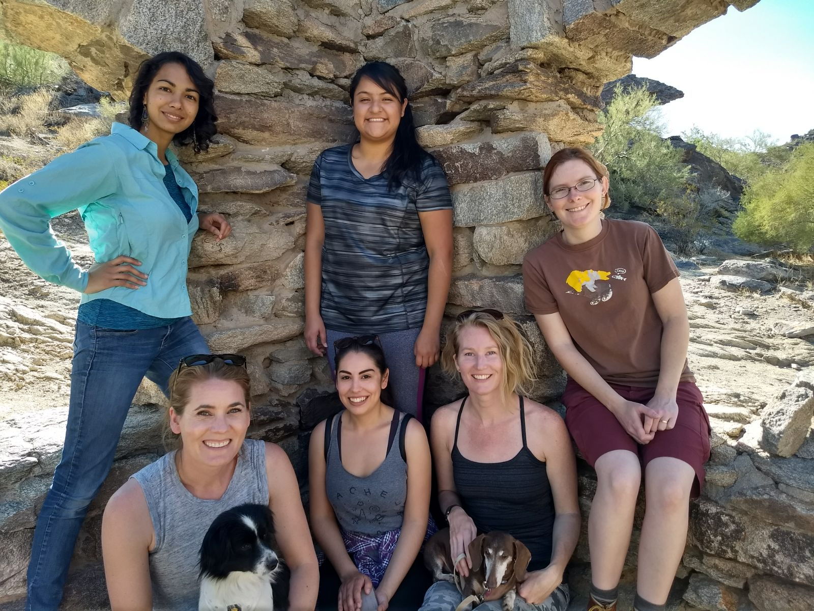
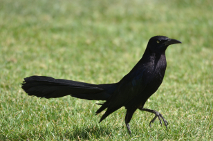
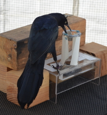
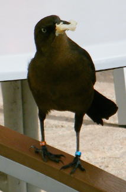
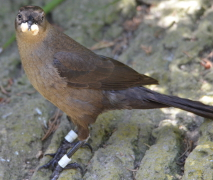
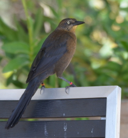
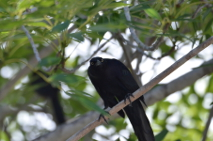
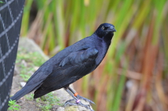
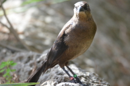
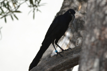

HUMANS

© Valerie D'Sa-Mayer
The Grackle Team
Top row (left to right):
Aelin Mayer (Maricopa Community College undergraduate)
Nancy Rodriguez (Arizona State University undergraduate)
Zoe Johnson-Ulrich (postdoc/experiment manager)
Bottom row (left to right):
Carol Rowney (lab manager)
Luisa Bergeron (field manager)
Corina Logan (principal investigator)
Dogs (left to right): Binnie and Lou (stress relievers)
More recent lab member (not pictured):
Aldora Messinger (Arizona State University undergraduate)
Elysia Mamola (Arizona State University undergraduate)
Michael Guillen (Arizona State University undergraduate)
FORMER LAB MEMBERS
Brianna Thomas
ASU Undergraduate
Assisted with running the long-term grackle field site at Arizona State University, including conducting trap habituation (2018)
Sofija Savic
ASU Undergraduate
Assisted with running the long-term grackle field site at Arizona State University, including conducting trap habituation (2018)
Nancy Rodriguez
ASU Undergraduate
Helped set up the grackle project at Arizona State University and conducted trap habituation (2017-2018)
Brigit Harvey
UCLA Undergraduate
Investigated cognition in California scrub-jays (2014-2015)
Michelle Gertsvolf
UCSB Undergraduate
Assisted with grackle cognitive tests and field observations (2015)
Soumya Suresh
UCSB Undergraduate
Assisted with grackle field observations (2015)
Maya Shoemaker
Volunteer (Santa Barbara, CA)
Assisted with grackle field observations (2015)
Christin Palmstrom
UCSB Undergraduate
Validated field methods for approximating endocranial volume in grackles and investigated social learning (2013-2015)
Luisa Bergeron
UCSB Undergraduate
Gathered behavioral observations on grackles in the field and assisted with cognitive tests (2014-2015)
Linnea Palmstrom
UCSB Undergraduate
Assisted with grackle cognitive tests and analyzed videos of lek-mating birds (2014-2015)
Mackenzie Zisser
UC Berkeley Undergraduate
Gathered and analyzed videos of lek-mating birds (2014)
Deanna Falge
UCSB Undergraduate
Gathered data on great-tailed grackle social interactions and breeding behavior (2013-2014)
Alexis Breen
Research Assistant
Assisted with New Caledonian crow data collection and blogged about her adventures there (2013).
She did a Masters degree and is now doing a PhD at the University of St Andrews.
|
GRACKLES: TEMPE, ARIZONA

© Corina Logan
Click here to see all of the Arizona grackles
GRACKLES: SANTA BARBARA, CALIFORNIA

© Corina Logan
Tequila - Adult male
Leg bands: Yellow / Purple - Sep 2014
He preferred to drop heavy rather than light objects into a water tube to raise the water level to reach floating food, and he changed his preference in a follow up experiment where heavy objects were no longer functional

© Corina Logan
Cerveza - Adult female
Leg bands: Blue / Orange - Sep 2014
She loves magnetism!

© Corina Logan
Charlie - Adult female
Leg bands: White / White - Dec 2013
Our first grackle! We banded her when she was a juvenile (her eyes were still brown instead of the adult yellow) and saw her grow into an adult. Her first breeding season was Mar-Aug 2014
Margarita - Adult female
Leg bands: Purple / Blue - Sep 2014
She also preferred to drop heavy rather than light objects and she loves magnetism too!

© Corina Logan
Michelada - Adult female
Leg bands: Orange / Red - Sep 2014
She was the fastest bird to learn to reverse a previously trained preference

© Corina Logan
Mojito - Adult male
Leg bands: Red / Green - Sep 2014
We banded and released him because the aviary was full at the time. You can see him in the wild flock with Tequila, Michelada, Cerveza, and Charlie at East Beach and the Santa Barbara Zoo
Chicha - Adult female
Leg bands: Blue / Red - Jan 2015
We banded and released her. You can see her in the wild flock with Charlie at East Beach

© Corina Logan
Batido - Adult male
Leg bands: Orange / Purple - Jan 2015
He preferred to drop heavy objects rather than light objects into a water tube and he hides under tables when raptors fly overhead

© Corina Logan
Horchata - Adult female
Leg bands: Green / Red - Jan 2015
She was the slowest bird to learn to reverse a previously trained preference

© Corina Logan
Jugo - Adult male
Leg bands: Red / Blue - Jan 2015
He always has a leaf or a piece of tape or something in his bill and he likes to put these objects in water
Refresco - Adult male
Leg bands: Purple / Yellow - Jan 2015
He preferred to drop heavy rather than light objects into a water tube to raise the water level to reach floating food, and he changed his preference in a follow up experiment where heavy objects were no longer functional
|